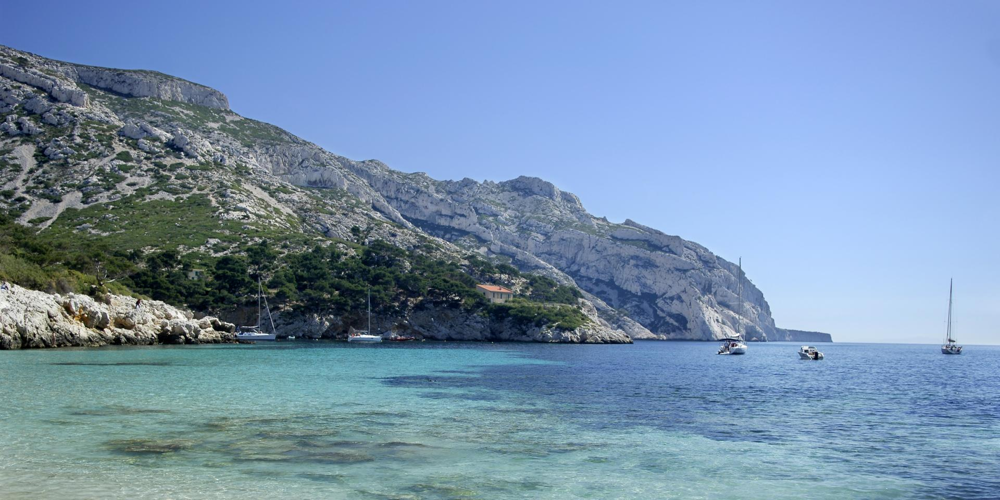
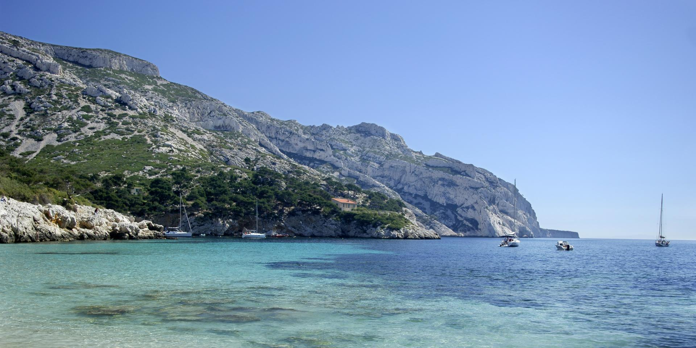

La calanque de Sormiou est la plus large et sans conteste une des plus belles,
ce n'est pas pour rien qu'elle est un des berceaux de la plongée sous marine.
On y trouve une plage de sable longée de cabanons avec une petite mise
à l'eau pour les riverains, un grand parking payant et un restaurant en hauteur.
Sur la droite le sentier se dirige vers le cap Sormiou en passant au dessus
de deux petites criques jusqu'à atteindre le cap Redon
(la grotte du Capelan n'est plus très loin). Sur la gauche le sentier
emprunte une voie assez large bordée de cabanons jusqu'au petit port de Sormiou,
puis le sentier passe au dessus de deux petites plages de galets avant d'attaquer
l'ascension de la crête de Morgiou. En sortant de la calanque à l'extrémité gauche se
trouve la grotte préhistorique Cosquer. Point fort : En été, Sormiou est la seule calanque
à se voir réserver une vaste zone de baignade surveillée par les maîtres nageurs.
 
